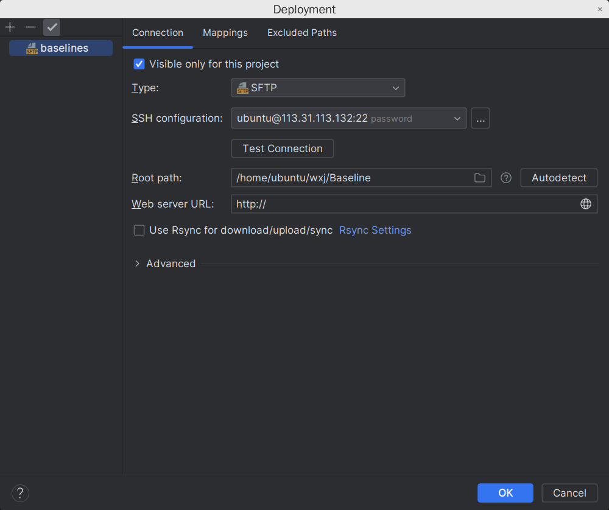

本文详细介绍了如何在服务器上配置Jupyter服务，并且完美访问
配置文件
Jupyter的配置方式有点类似于Nginx，都是通过一份配置文件来维护服务器的工作模式，可以通过运行如下命令直接生成配置文件
1 | jupyter notebook --generate-config |
如果是root用户执行，需要用以下配置文件
1 | jupyter notebook --generate-config --allow-config |
执行成功后记住配置文件存储位置
生成密码
从 notebook 5.3 版本开始，当第一次通过令牌(token)登录的时候，notebook服务器会让用户有机会在用户界面设置一个密码，这将通过一个表单来询问当前的令牌以及新的密码，输入并点击 Login and setup new password 。
下次登录时候就可以直接选择输入密码而不需要令牌。如果没有设置密码，也可以按照下面的操作通过命令行设置密码。此外，可以在配置文件中设置 --NotebookApp.allow_password_change=False 来禁止第一次登录时候修改密码。
在 notebook 5.0 版本开始，可以通过一个命令 jupyter notebook password设置密码并保存到文件 jupyter_notebook_config.json，如下所示：
1 | jupyter notebook password |
加密通信
采用密码的时候，配合带有网站证书的 SSL 是一个好办法，可以避免哈希的密码被非加密的形式发送给浏览器。
可以通过设置参数 certfile 来开启 notebook 服务器，进行一次安全协议模式的通信，其中 mycert.perm 是自签(self-signed)证书。
1 | jupyter notebook --certfile=mycert.pem --keyfile mykey.key |
自签证书可以通过 openssl 生成，如下所示，生成一个有效期为 365 天，将 key 和 证书数据都保存在同个文件中：
1 | openssl req -x509 -nodes -days 365 -newkey rsa:2048 -keyout mykey.key -out mycert.pem |
当打开浏览器连接服务器的时候，浏览器会提示你的自签证书是不安全或者无法识别的，如果你希望获取不会产生警告的自签证书，可以根据教程^6所说来操作。此外，也可以通过采用 Let's Encrypt ^7来得到免费的 SSL 证书，然后根据教程[8]来配置服务器。
运行notebook 服务器
上述步骤介绍了如何进行配置，接下来就是开始运行服务器，然后远程访问。这里首先还是需要进行如下操作，也就是修改配置文件 jupyter_notebook_config.py，找到下面几个信息修改并去掉注释：
1 | 证书的信息 |
接着运行命令，如果是 root 用户，需要再加上 --allow-root ，
1 | jupyter notebook |
然后本地浏览器输入 服务器IP:80，接着就是输入刚刚设置的密码，即可访问 Jupyter notebook，然后就和在本地电脑操作 Jupyter notebook 一样，创建文件，运行。
需要注意的是不能在隐藏目录 (以 . 开头的目录)下启动 Jupyter notebook, 否则无法正常访问文件。
如果访问失败了，则有可能是服务器防火墙设置的问题，此时最简单的方法是在本地建立一个 ssh 通道：
在本地终端中输入
1 | ssh username@address_of_remote -L 127.0.0.1:1234:127.0.0.1:8888 |
以下转载一篇关于ssh隧道的blog：
Dataspell连接
可以使用sftp维护本地和服务器上代码的一致性

如果您喜欢此博客或发现它对您有用，则欢迎对此发表评论。 也欢迎您共享此博客，以便更多人可以参与。 如果博客中使用的图像侵犯了您的版权，请与作者联系以将其删除。 谢谢 ！